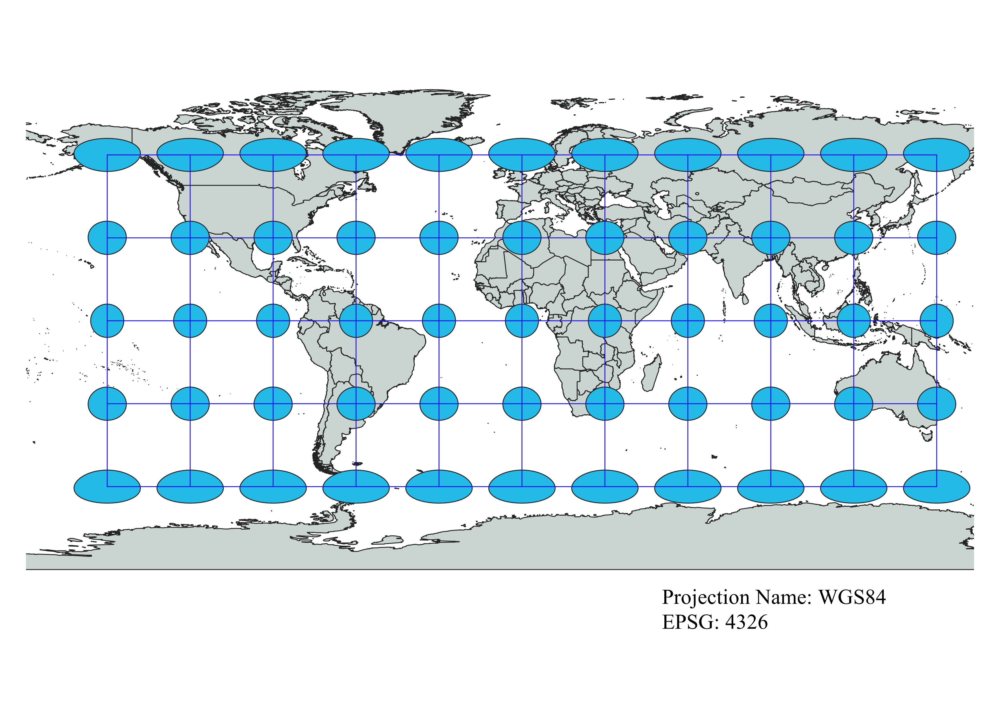
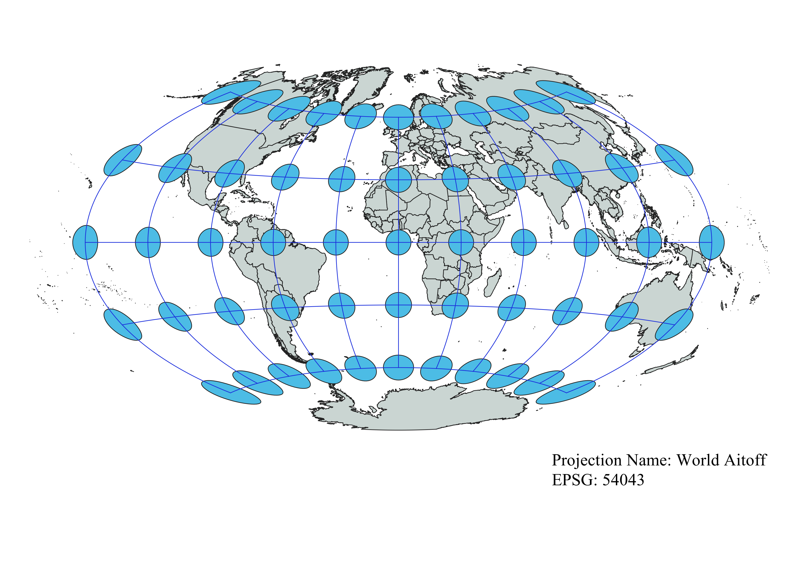
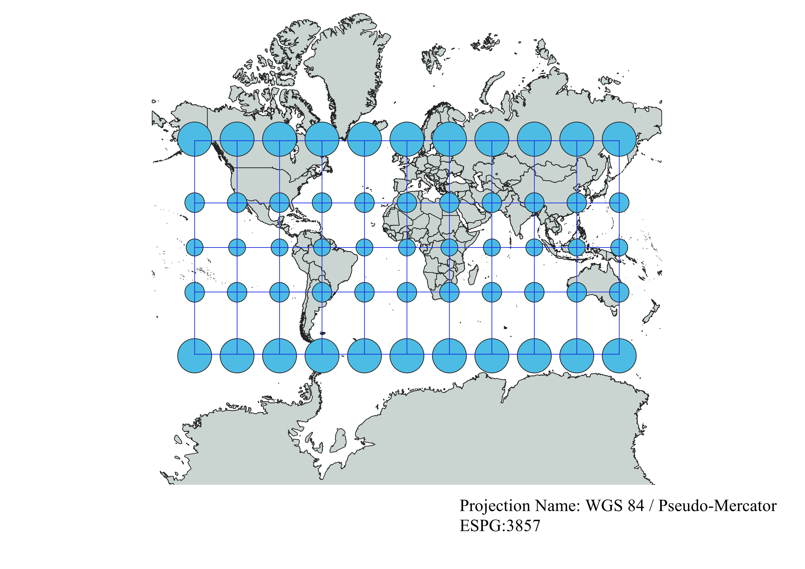
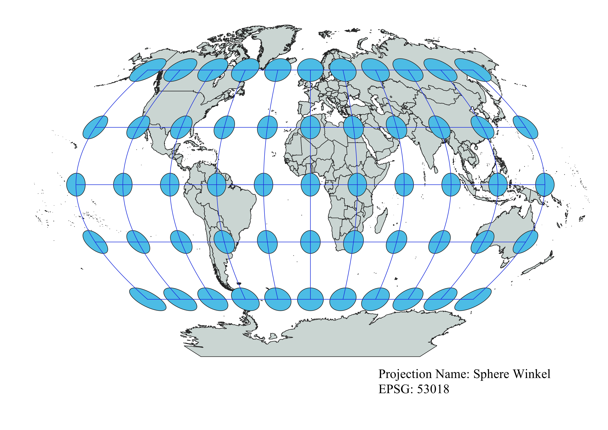
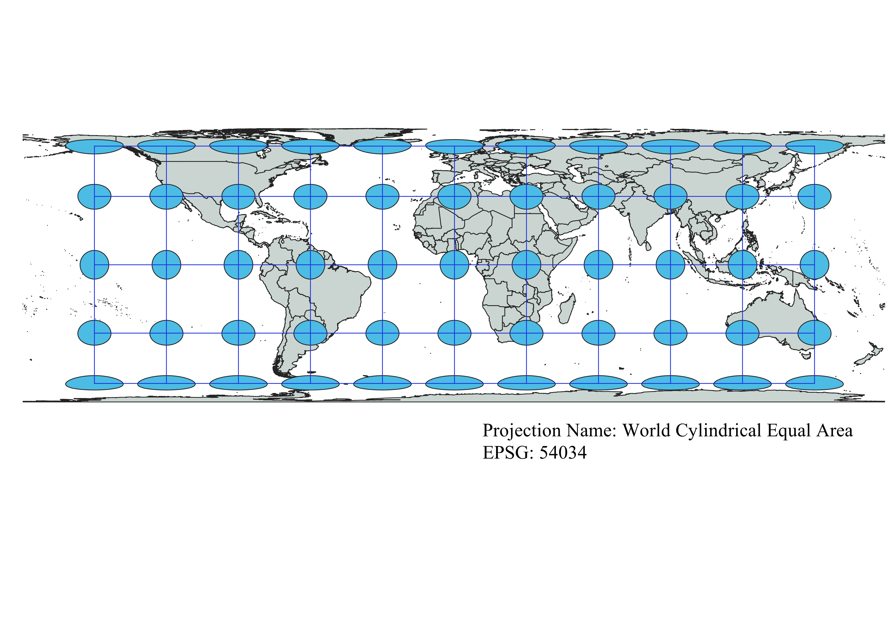
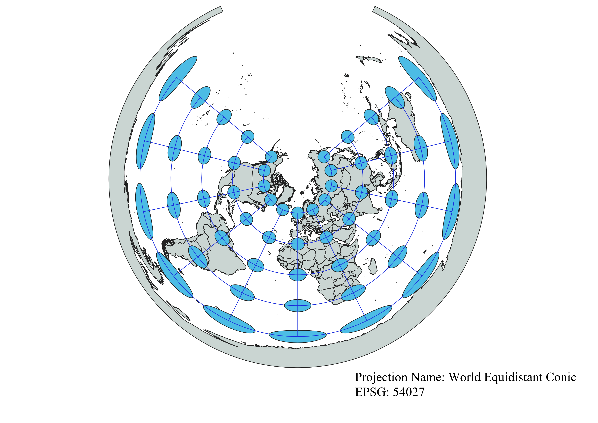
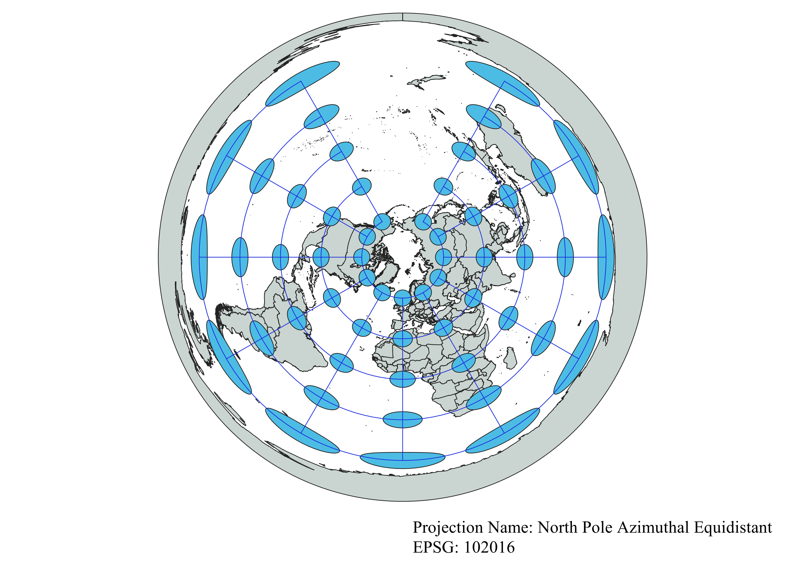
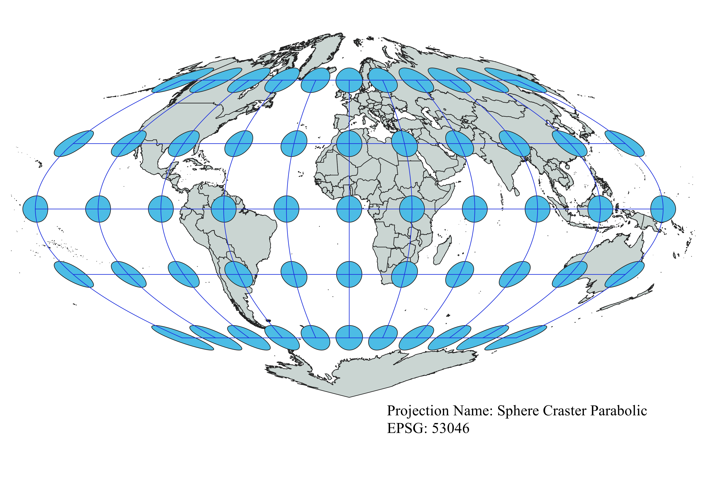
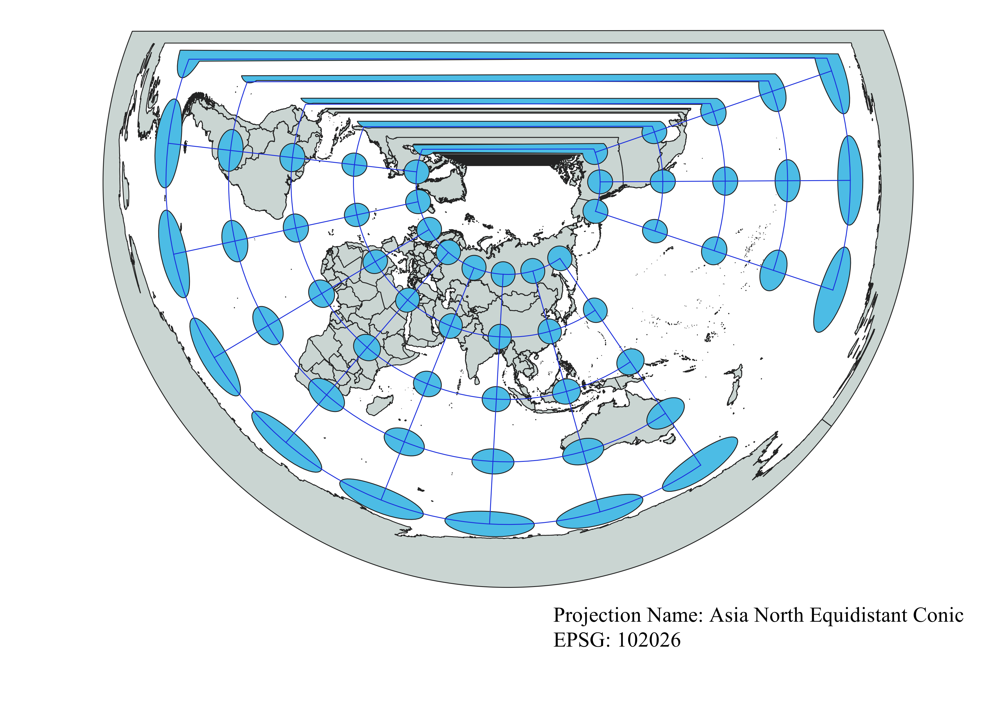

In this project learned how to display images in different projections
Describe in your own words how you displayed the map in different projections using QGIS
To display the data I started by using a base map of the world. Then I used the indicatrix mapper to layer over the base map.
The indicatrix mapper puts a grid and cirlces over the map to display the distortion of countries when a specific map projection is used.
Using the different map projections in QGIS shows how different projections such as conics, cyliders and azimuthal projections cause distortion.
The map projection can preserve a number of things while distorting others in exchnage. For example, one projection might preserve areas at the cost of angles.
WGS84 Projection
This projection seems to preserve the shape of countries in the middle lattitudes.
The futher north you go from the equator the more distorted countries like Greenland will be.
The further south you go from the equator the more distorted countries like Antarctica will be.

Aitoff Projection
The Aitoff projection preserves the shape of the countries in the middle of the map.
The countries in the corners of the map, for example, northeast of the equator, are very distorted.
This makes sense because it's an azimuthal projection, so it will presereve distance and direction from a certain point.

Pseudo Mercator
The Pseudo Mercator is commonly seen and this projection shows how much it distorts size of countries.
This is a cylindrical projection. It preserves shape and distance in areas near the equator.
It heavily distorts countries at this poles making them seem much larger.

Sphere Winkel
Looking at this projection is seems to elongate most of the countries on the map, especially those in the corners of the map.
It looks like an azimuthal projection, so it's probably good at minimizing distortion of distances.

World Cylindrical Equal Area
This maps seems to have little distortion in most areas except the poles.
The poles of this projection are incredibly squished down.
This makes sense because it is a cylindrical projection. Meaning the areas that are touching the cylinder (the middle in this case)
will preserved more than those that are not touching the cylinder

Sphere Equidistant Conic
This conic projection has the least distortion right in the center of the map.
The further you go from the center of the circle, the more distortion there will be.
Conics are better for one region or place, so this is probably why this projection shows one area (the poles) as the least distorted.

North Pole Azimuthal Equidistant
This azimuthal projection is set on the North Pole. Its size and shape seems to be preserved pretty well.
Going further out from the North Poles shows how much distortion has occurred to the other countries.

Sphere Craster Parabolic
This is one of the projections I chose and I thought its shape was interesting.
This projection preserves areas directly on the equator while heavily distorting the poles.
I hadn't heard of a parabolic projection before and seeing its shape reminds me of the Aitoff projection we saw earlier,
just more pinched in at the poles.

Asia North Equidistant Conic
This was another projection I chose. I thought this conic was interesting because of its flat top.
The name and look of the map show that this conic was focused on the continent of Asia.
This makes sense because Asia is preserved very well, while areas outside of it are distorted.

Now, you should add the following projections on your own:
EPSG: 3857, 53018, 54034, 54027, 102016, and two additional projections that you choose.
Data used for this project
Download Natrual Earth 1:10m Cultural Vector